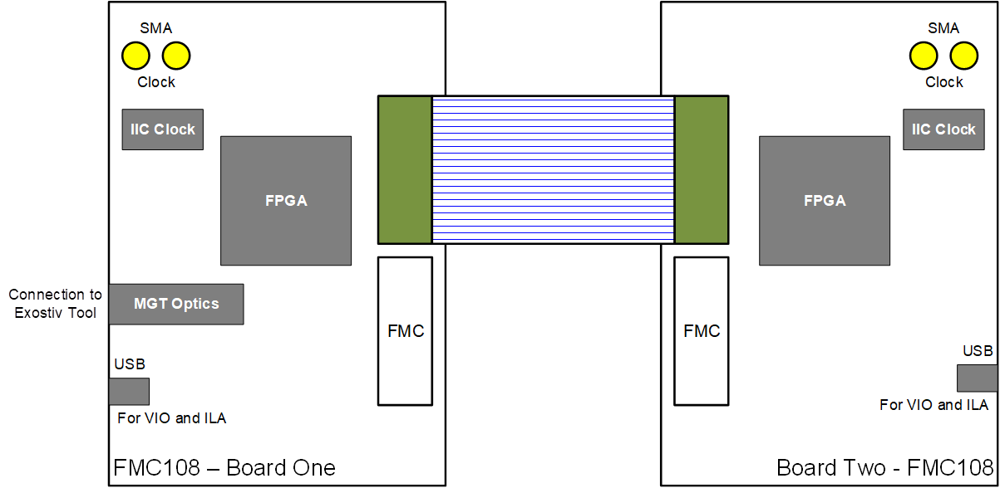
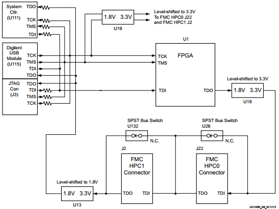
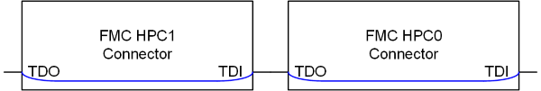
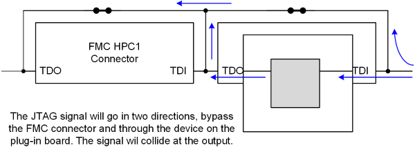
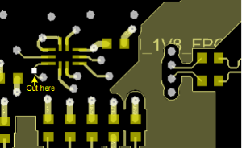
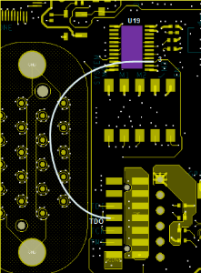
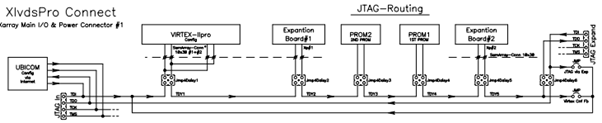
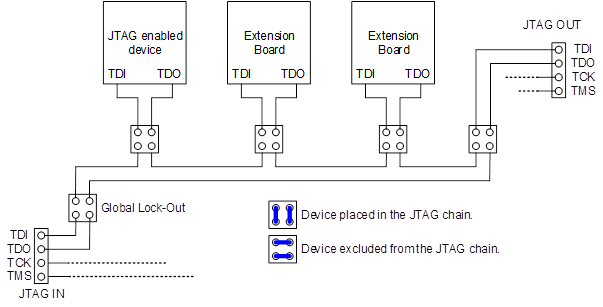
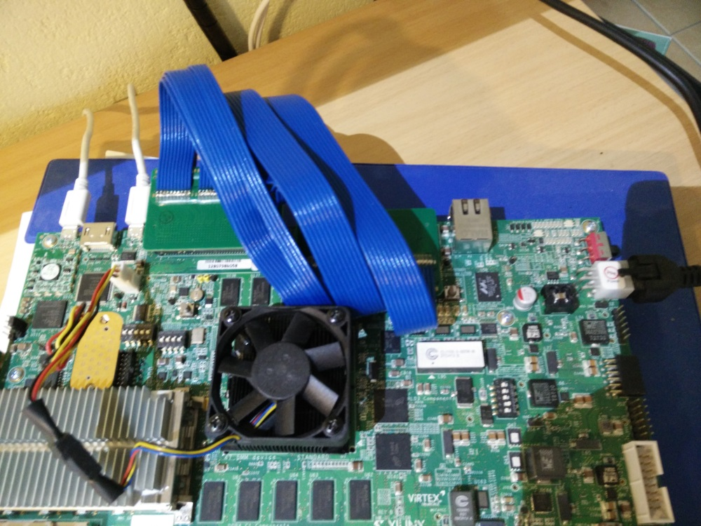

Interconnect Xilinx boards over FMC connectors

Would it not
be nice to have the possibility to connect two Xilinx development boards, as the VCU108 Ultrascale board,
together over one of the on board FMC connectors like below figure shows.
 Figure 1
To realize this setup Samtec is of great help because they make the flat cables with connectors to plug in the FMC connectors.
The cable part number is HDR-16947-XX (where the XX is the length of the cable). The cable datasheet can be viewed, downloaded and saved
from here.
If you have two Xilinx development boards (not necessary equipped with the same FPGA or the same type of development board) and are the owner of a Samtec HDR
cable then it seems to be a simple action to interconnect two boards. Plug one end of the cable in an FMC connector on one board and do the same on the other
board. Power up the boards and start working.
What will happen is that nothing will work. It's not possible to configure anything over JTAG on the boards.
Bummer! So let's go look what's wrong and make the whole thing run.
Put your engineers hat on!
The XCVU108 Ultrascale board is used as example in this description.
Xilinx Boards
Xilinx Demo\Development Boards use the JTAG chain to configure the FPGA and other JTAG enabled devices on the board and possibly configure also FPGA and JTAG
enable devices on boards plugged into the FMC connector(s).
The JTAG chain runs over the board interconnecting the different devices that can make use of JTAG. Included in this chain are the two Samtec FMC connectors as
below figure from the Xilinx "ug1066-vcu108-eval-bd.pdf" user guide shows.
 Figure 2
Thus it should be possible to interconnect two boards and use JTAG to configure everything that is JTAG enabled on both boards. As we discovered, it is not.
VITA-57
The VITA specification makes it possible that plugged mezzanine boards are tested or configured through JTAG chain starting from the FPGA.
s with everything, there are some rules to respect in order to pass the JTAG chain to/through the FMC connector are:
- The TMS and TCK signals are required to be driven to the module from the carrier, therefore per FMC spec, the mezzanine card CANNOT behave as a master.
- This is the case for the Xilinx boards, the TMS and TCK signals originate from the boards JTAG connector and run to the FMC connectors.
- Vita rule 5.59: The carrier card shall ensure that an independently buffered TCK shall be input to each IO mezzanine module.
- That is the case on Xilinx boards. The main TCK signal is passed to an on-board 74AVC8T245, for an VCU108 board this is U19. Each FMC connector gets this way
it's own TCK signal.
- Vita rule 5.60: The mezzanine module card shall only have one load on the TMS signal.
- As for the TCK signal above, the main TMS signal is passed through an on-board buffer so that a single TMS signal runs to the FMC connectors.
- Vita rule 5.61: The carrier card shall connect TDI directly to TDO, if the FMC module is not plugged into carrier card
- This is where it goes contrary on Xilinx boards.
- The rule says that when a mezzanine card is not plugged into the connector TDI and TDO should be
connected. This rule is obvious and is done in order to let the JTAG chain operate normally when a board is not plugged into the FMC connector.
- What should happen when a mezzanine board is not plugged into the main board FMC connector is showed in below figure.
 Figure 3
- What's created as Xilinx JTAG chain when a board is not plugged in. TDI and TDO are connected over a jumper or switch (SPST) as shown in below figure.
 Figure 4
Figure 4
- The whole thing here turns around the words: not plugged into
That is also the big stumble stone for many customers. It is impossible to remove the mezzanine card from the JTAG chain.
without physically removing it. In a lot of cases it is not wanted or even not possible to remove the mezzanine board while debugging or testing.
People then get stuck if they don't want the plug-on board in the JTAG chain but cannot remove it physically.
- If one leaves a plug-on board in the FMC connector and closes the switch or jumper to take the connector, and by that the plug-on board, out of the
JTAG chain some circuit/signal cluttering will happen.
See below figure.
 Figure 5
- The above happens also when one wants to interconnect two Xilinx board over a Samtec HDR cable. When plugging a HDR cable in an FMC connector, it triggers
the PRSNT pin and that pin disables the SPST switch of the FMC connector on the board.
The switch opens and the signals are obliged to flow through the FMC setup. When plugging the cable into an FMC connector of one board, the TDO, TCK, TMS
and TDI signals are carried to the other side of the cable. When that side is plugged into a FMC connector on the second board, TDO, TCK and TMC signals of
both boards are driving up to each other, cluttering the whole JTAG setup.
- Solution, let’s make sure the PRSNT signals do not engage (open) the switch of the connector.
Even then the JTAG signals are still routed to the FMC connector and thus keep cluttering the signals. So it was not really a solution.
Make the setup work
Do this (take the VCU108 figure of the JTAG chain to be able to follow next guidelines):
- U19 (SN74AVC8T245) fits on the TOP of the PCB.
- U13 (SN74AVC2T245) fits on the bottom of the PCB.
- Lift following pins of component U19:
- 21 (FPGA_TDO_FMC_TDI_BUF),
- 20 (FMC_HPC0_TMS_BUF)
and
- 17 (FMC_HPC0_TCK_BUF).
- Turn the PCB upside down and at the bottom, cut the small trace from U13 pin 5 to a VIA.

- Now a small wire need to be placed to close the JTAG chain.
- Connect on the top level of the PCB a wire between U19 – pin 3 and J3 pin TDO.
- Glue the wire with tape or nail polish onto the area of the bulls-eye connector.

Now we would like to program each FPGA on its board in one JTAG chain. That would be easy because then we can use one. JTAG cable to download and debug a
components in the JTAG chain on both boards at the same time.
At time of writing this article, the advise is: Do not try to put two boards in a single JTAG chain. It’s not working.
Do following:
- Plug the USB programming cables of both boards in USB ports of the same PC.
- On the PC start two hardware managers.
- Each hardware manager will show both boards, but each hardware manager can only serve one JTAG connection and thus one board.
- In one hardware manger select one board to use and in the other hardware manager select the other board
- Now it is possible to work on one PC, but using two hardware managers.
My old PCB designs.
When I used to make Xilinx PCBs back in 2004 (XVamPire, …) I created the JTAG chain differently.
With my setup it’s easy to take a JTAG device or board completely out of the JTAG chain while keeping the rest of the JTAG chain intact.
When I made boards there were no FMC connectors nor VITA specification, but I used the first versions of the Samtec FMC connectors and was engaged with Samtec
in a discussion that ended later in the VITA-57 specification.
- Nothing holds one to follow the rules explained above!
The whole extra thing with my approach is that it adds a extra dimension to Vita rule 5.61.
- When there is no plug-in board mounted on the FMC connector it interconnects TDI to TDO.
- With a plug-in card mounted in the FMC connector it can do the same but without having to remove the mezzanine or plug-in card. This way the plug-in
card can be removed from the JTAG chain without the need to be physically removed.
- A plug-in card can never become a master.
- With my design of the JTAG chain it’s also easy to interconnect JTAG chains of different boards or systems into one larger JTAG chain.
This is a screenshot of the original schematics of an XVamPire-board.

A updated figure of above presented of the JTAG setup:

Picture
This is a picture of a modified XCVU108 board where the HDR cable connects both FMC connectors on the board. One can now transceive signals between different IO banks of the FPGA.

The End.